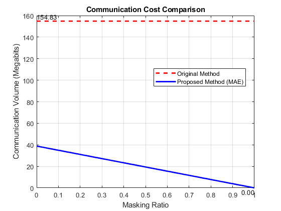

Multiview systems have become a key technology in modern computer vision, offering advanced capabilities in scene understanding and analysis. However, these systems face critical challenges in bandwidth limitations and computational constraints, particularly for resource-limited camera nodes. This paper presents a novel approach for communication-efficient distributed multiview detection and tracking using masked autoencoders (MAEs). We introduce a semantic-guided masking strategy that leverages pre-trained segmentation models and a tunable power function to prioritize informative image regions. This approach, combined with an MAE, reduces communication overhead while preserving essential visual information. We evaluate our method on both virtual and real-world multiview datasets, demonstrating comparable performance in terms of detection and tracking performance metrics compared to state-of-the-art techniques, even at high masking ratios. Our selective masking algorithm outperforms random masking, maintaining higher accuracy and precision as the masking ratio increases. Furthermore, our approach achieves a significant reduction in transmission data volume compared to baseline methods, thereby balancing multiview tracking performance with communication efficiency.
Figure 1: Kappa abalation study figure.
Figure 2: Communication cost vs. masking ratio.
@inproceedings{dakic2025MAE,
title = {Resource-Efficient Multiview Perception: Integrating Semantic Masking with Masked Autoencoders},
author = {Kosta Dakic and Kanchana Thilakarathna and Rodrigo N. Calheiros and Teng Joon Lim},
year = {2025},
booktitle ={2025 IEEE International Conference on Pervasive Computing and Communications (PerCom)}
}